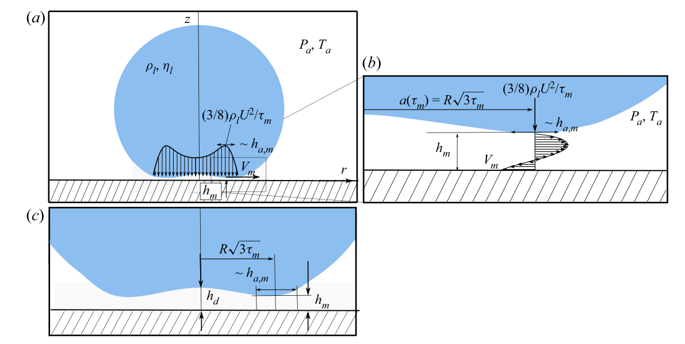

液滴撞向热壁时，最薄的一层气膜有多厚？
作者把颈部液体惯性与气膜内的润滑流相联系，得到最小膜厚在惯性主导和毛细作用显著时的不同标度。
研究背景
Leidenfrost 效应的典型表现是液滴在足够热的基底上近乎无摩擦滑动，因为液滴与固体之间形成了自身蒸汽层。这个蒸汽层一方面能降低摩擦、可用于 lab-on-chip 操控，另一方面也会隔热，降低喷雾冷却和热管理效率，甚至导致 burnout。
这篇文章关注的是 dynamic Leidenfrost regime：液滴不是静止放在热基底上，而是以有限速度 U 撞击基底。核心问题是：在初始撞击阶段，空气或蒸汽层何时足够厚，能够阻止液体与固体短时接触？作者把问题缩小为两个可建模对象：
- neck 区域的最小膜厚
hm，它决定液体是否首先在环状 neck 附近接触基底。 - 中心 dimple/bubble 的厚度
hd和蒸汽供给，它决定中心区域能否形成持续增长的蒸汽泡，从而进入 dynamic Leidenfrost 状态。
研究方法
基本变量与无量纲数
液滴半径 R，撞击速度 U，液体密度 rho_l、黏度 eta_l、表面张力 gamma、汽化潜热 L。周围空气和蒸汽用下标 a、v 区分，尤其是气体黏度 eta_a 与蒸汽黏度 eta_v。
作者用 R、U、rho_l U^2 作尺度，并定义
tau = t U / R
Re = U R / nu_l
St = rho_l U R / eta_a
We = rho_l U^2 R / gamma
Pr = nu_l / alpha_l
对超热基底还定义
beta = k_v (T_s - T_b) / (eta_v L)
beta_a = k_v (T_b - T_a) / (eta_v L)
其中 T_s 是基底温度，T_b 是沸点，T_a 是环境温度。
物理模型的核心位置：不是整个气膜，而是 neck 附近最大压力区
作者强调，hm 在液体压力最大、气膜最薄的 spatio-temporal region 达到最小。这个位置是液滴底部 dimple 边缘附近的 neck，而不是中心轴线。

Figure 1 是模型图：
- Figure 1(a) 显示液滴接近基底、中心 dimple 和环状 neck 的整体几何。压力峰值约在 neck 处。
- Figure 1(b) 放大 neck 区域：在随 neck 速度
V_m移动的参考系中，基底相对运动造成 Couette 流，压力梯度造成 Poiseuille 流，两者共同决定最小膜厚。 - Figure 1(c) 显示中心气泡几何：中心厚度
hd远大于 neck 厚度hm，二者在同一个初始撞击事件中扮演不同角色。
使用 Riboux & Gordillo 的 Wagner 撞击框架
作者沿用 Riboux & Gordillo 2014/2017 的初始撞击理论。关键结果：
a(t) = sqrt(3 U R t) = R sqrt(3 tau)
V(t) = da/dt = U * sqrt(3) / (2 tau^{1/2})
其中 a(t) 是 wetted radius 或等效 neck 位置，V(t) 是 neck 径向外移速度。液体薄片厚度标度为
h_a(t) = R * sqrt(12/(3 pi)) * tau^{3/2}
在 neck 上游约 h_a 的位置有 stagnation point，液体压力最大。压力跳跃为
Delta p(t) = 1/2 rho_l V(t)^2 = (3/8) rho_l U^2 tau^{-1}
因为压力随 tau -> 0 发散，真正的最小膜厚发生在 dimple 形成时间附近。作者用已有实验/理论给出
hd ~= 2.8 R St^{-2/3}
tau_m ~= C_tau St^{-2/3}, C_tau ~= 12.4
于是 neck 初始速度、最大压力和压力变化长度为
V_m ~ U St^{1/3}
Delta p_m ~ rho_l U^2 St^{2/3}
h_{a,m} ~ R St^{-1}
这些结果是后面气膜厚度标度的输入。
核心结果
1. 等温基底：惯性主导气膜厚度 hm/R ~ St^{-7/6}
等温基底没有蒸发供给时，液滴能否被空气层缓冲，取决于 neck 区域的 Couette 流与 Poiseuille 流是否能平衡。作者在随 neck 移动的参考系中写出量级平衡：
V_m h_m / 2 ~ (h_m^3 / (12 eta_a)) * (rho_l V_m^2 / (2 h_{a,m}))
由此得到惯性主导 regime 的最小空气膜厚度：
h_m / R ~= 4 C_tau sqrt(pi) St^{-7/6}
这个结果的物理含义是：气膜越薄，Poiseuille 排气能力越弱；撞击越快或 St 越大，neck 速度和压力越高，但最终最小膜厚按 St^{-7/6} 下降。
作者还验证了润滑假设：
h_m / h_{a,m} ~ St^{-1/6} << 1，几何是 slender。- 气体惯性相对黏性小，量级约由
rho_a/rho_l << 1保证。
2. 毛细效应何时不可忽略：过渡条件 We St^{-1/6} ~ 1
上面的推导忽略了液-气界面曲率造成的毛细压力。作者定义一个局部毛细长度 ell_c，令
gamma h_m / ell_c^2 ~ Delta p_m
如果 pressure variation 的长度 h_{a,m} 大于或可比 ell_c，毛细效应不可忽略。结合惯性标度可得到过渡条件：
h_{a,m} / ell_c ~ We^{1/2} St^{-1/12}
capillary relevant if We St^{-1/6} <= O(1)
在毛细主导 regime 中，压力变化长度不再是 h_{a,m}，而是 ell_c，得到
h_m / R ~= 8 C_tau^{2/3} We^{-1/3} St^{-10/9}
Figure 2 把这两条理论曲线与 de Ruiter et al. 2012 的水和乙醇等温撞击实验比较。图中黑/橙竖线表示各液体的 We St^{-1/6}=1 速度。作者强调，连续/虚线分别为惯性/毛细 regime，没有额外拟合常数，整体与实验相符。
3. 气体平均自由程与 slip 是潜在误差，但本文先忽略
Figure 2 中 hm 可以接近空气的平均自由程，常压空气约 100 nm。因此严格说，经典 Couette/Poiseuille 流率中对 wall 和 gas-liquid interface 的 no-slip 条件应有滑移修正。作者承认这会让表达式依赖 mean free path，但基于 Figure 2 的合理一致性，本文先取 slip length 为零。
这是一个重要 caveat：当你模拟或实验进入纳米级气膜时，连续介质 no-slip 润滑模型可能需要 Knudsen/slip 修正。
4. 超热基底：蒸发供给改变 hm 的代数方程
对 Leidenfrost 条件，neck 区域不仅有原来的 Couette/Poiseuille 气体流，还要考虑蒸发产生的蒸汽流。作者假设高导热基底温度在初始撞击中近似恒定，壁面到蒸发界面的热通量为
k_v Delta T / h_m
沿 h_{a,m} 长度产生的蒸汽体积流率为
q_v = k_v Delta T h_{a,m} / (rho_v L h_m)
在 neck 下游的蒸汽流仍可用黏性润滑描述，条件由 beta < 1 支持。质量守恒变为
Couette inflow + pressure-driven flow ~= evaporative vapour flow
推导后作者得到关于 h_m/R 的代数方程，以变量 y 表示：
y [1 + y eta_a/(6 eta_v)] = beta*
beta* = beta (rho_l/rho_v)(eta_v/eta_a)
其解给出超热基底下的 hm/R，并允许 C_tau 通过蒸汽生成修正：
C_tau^{5/2} = 12.4^{3/2} (C_tau + beta* St^{-1/3})
Figure 3 用 Chantelot & Lohse 2021 的超热基底数据检验模型：纵轴是实验测得 h_CL 与理论 h_th 的比值，数据在不同 T_s 下集中在 1 附近，说明 (2.27)-(2.29) 预测的 neck 膜厚与实验量级一致。
5. 短时接触边界对 hm/表面杂质尺度极其敏感
Figure 4 把理论计算的基底温度曲线与 Chantelot & Lohse 2021、Lee et al. 2020 的短时接触实验比较。图中三条曲线对应 hm = 250 nm、300 nm、360 nm。红/黑实验点表示 short-time contact。
主要结论：
- 对给定撞击速度
U，低于曲线的温度倾向于发生短时接触；高于曲线则预期无接触/Leidenfrost。 hm增大，即表面 asperities 或 interfacial contaminants 尺度增大时，需要更高基底温度才能避免接触。- 预测对
hm非常敏感，因此动态 Leidenfrost 温度不仅是液体/基底材料参数，也受表面污染物和粗糙度尺度控制。
这对热液滴模拟很关键：如果把基底完全光滑处理，模型可能低估真实实验中的 T_L，因为真实 asperities 会更容易刺穿蒸汽膜。
6. 中央蒸汽泡质量守恒给出 dynamic Leidenfrost 温度估算
除了 neck 处短时接触，作者还考虑中心区域是否能形成持续增长的 cylindrical vapour bubble。中心泡厚度取
hd/R ~= 2.8 St^{-2/3}
蒸汽泡半径按 R sqrt(3 tau) 增长。作者比较两类蒸汽来源：
- dimple 中央区域产生的蒸汽质量流率。
- neck 区域产生的蒸汽质量流率。
他们认为 neck 产生的蒸汽远小于 dimple 产生的蒸汽，因此可忽略 neck 对中心泡供给的贡献。由中心蒸汽泡增长率与蒸汽生成率平衡，得到 minimum superheat：
Delta T_L = 2.8 (rho_v0/rho_l) [(273 + T_b)/(273 + T)]
(eta_a/eta_v) Pr_v (L/Cp_v) St^{1/3}
其中蒸汽密度按平均温度 T=(T_b+T_s)/2 修正。Figure 5 用乙醇实验数据检验该式：理论曲线与 Shirota et al. 2016 的 dynamic Leidenfrost temperature 数据吻合较好。作者指出：
U <= 3 m/s时差异较小。- 更大速度下误差可达约
20 °C，相对误差约15%。 - 误差来源包括无拟合常数、
hd前因子来自较低速度实验、气体性质按平均温度估算、St中使用空气黏度而中心泡中实际是空气-蒸汽混合物。
7. 等温基底与超热基底的中心气泡几何不同
作者最后强调，类似 (2.33) 的质量守恒不能用于等温基底。原因是等温撞击中没有足够蒸汽生成，空气通过 neck 的相对流量总是小于“恒定厚度 hd、半径增长为 R sqrt(3 tau) 的圆柱气泡”所需流量。因此等温基底和超热基底中的 entrapped gas bubble/neck geometry 会显著不同。
附录与验证
Appendix A：Wagner 框架支撑 a(t)=sqrt(3URt)
Figure 6 展示线性化边界条件下的势流速度场。作者回顾了 Riboux & Gordillo 2014 的推导：早期撞击 tau << 1 中，液体外部主流可看作不可压势流，在 z=0 上满足内侧不可穿透、外侧势函数为零的边界条件。Wagner 条件给出
a(tau) = sqrt(3 tau)
并说明若忽略局部速度修正 u，会得到 sqrt(2 tau)，因此前因子的差别来自更精细的势流解。局部切向速度有 sqrt(a/x) 奇性，在随 a_dot 移动的参考系中 stagnation point 距离满足
x_s ~ a / a_dot^2 ~ tau^{3/2}
这支持正文中把压力变化长度取为 h_a ~ tau^{3/2}。
Appendix B：为什么过渡取 We St^{-1/6} ~= 1
Figure 7 测试了另一种可能：如果所有 de Ruiter 数据都落在毛细 regime 中，能否用毛细标度乘一个常数拟合水和乙醇？图中把毛细公式乘了 K=0.65。作者认为这种处理不如 Figure 2 中“按 We St^{-1/6} ~= 1 分惯性/毛细 regime 且无拟合常数”的解释自然，因此支持正文的过渡判据。
Appendix C：忽略液体热边界层热通量的条件
作者估算撞击早期液体热边界层厚度：
lambda_theta ~ R Pr^{-1/2} Re^{-1/2} tau_m^{1/2}
热通量修正项可写成一个参数，随 beta_a beta^{-3/4} St^{-1/3} 等因素变化。对 Chantelot & Lohse 2021 的参数范围，该参数较小，支持正文忽略液体内部热通量的近似。但作者也指出，当撞击速度较小或 superheat 较小时，液体热边界层热通量的重要性会上升。
Appendix D：乙醇/空气/乙醇蒸汽物性
Table 1 给出乙醇相关物性：R=1.4 mm、rho_l=789 kg/m^3、eta_l=1.07 mPa s、gamma=22 mN/m、L=853 kJ/kg、T_b=78 °C、Pr_v=0.96、rho_v0=1.43 kg/m^3、eta_v0=0.0103 mPa s、eta_a0=0.01846 mPa s。附录还按平均温度拟合 Cp_v、eta_v、eta_a。
适用范围与局限
- 模型是 early-time、axisymmetric、smooth-substrate、high-conductivity substrate 的简化理论；粗糙度只在讨论中作为
hm/asperity 尺度进入，并未完整建模。 - 气膜最薄可接近常压空气 mean free path，严格需要 slip/Knudsen 修正；本文为保持简洁取 no-slip。
- 超热基底推导忽略液体热边界层吸热，Appendix C 说明这在较低速度或较小 superheat 时可能不再安全。
Delta T_L公式使用平均温度估算气体物性，且中心泡内实际是空气-蒸汽混合物；高速度下误差可到约20 °C。- 公式 (2.33) 要求表面杂质或 corrugation 尺寸小于
hd ~= 2.8 R St^{-2/3}；若 asperities 与hd可比，会破坏蒸汽层并提高 Leidenfrost 温度。